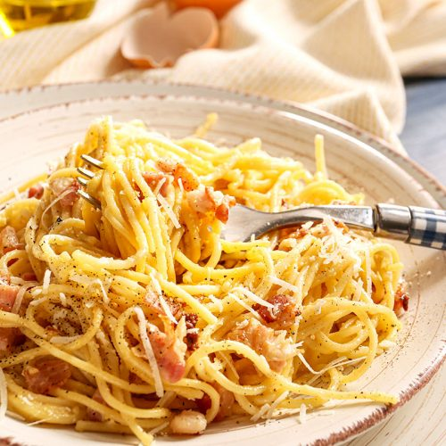

Pasta Carbonara

A plate of our final recipe: Spaghetti alla Carbonara
Pasta alla carbonara is a classic Italian pasta dish that originated in Rome.
The dish is made with spaghetti or another long pasta, and the sauce is a creamy, rich mixture of eggs, Parmesan cheese, and crispy bits of pancetta or guanciale (cured pork jowl).
The result is a simple yet delicious pasta dish with a rich and indulgent sauce.
It's a popular choice in Italian restaurants around the world, and is often served with a sprinkle of black pepper and additional Parmesan cheese on top.
Ingredients (for two)
- 160 gr Spaghetti (or other pasta shapes)
- 60 gr guanciale
- 2 egg yolks and 1 full egg
- 25 gr Pecorino Romano cheese
- black pepper and salt
- additional parmesan cheese
Steps
- Bring a large pot of salted water to a boil. Add the spaghetti and cook according to the package instructions until al dente.
- While the pasta is cooking, heat a large skillet over medium heat. Add the guanciale and cook until crispy, about 8-10 minutes. Remove from heat and set aside.
- In a large mixing bowl, whisk together the eggs and Pecorino cheese until well combined. Season with salt and pepper to taste.
- Once the pasta is cooked, reserve 1 cup of the pasta water, then drain the pasta.
- Add the pasta to the skillet with the guanciale and toss to combine.
- Slowly pour the egg mixture over the pasta, stirring constantly to prevent the eggs from scrambling. Add the reserved pasta water, a little at a time, until the sauce becomes creamy and coats the pasta.
- Serve hot with additional Parmesan cheese on top.
- Enjoy your meal!